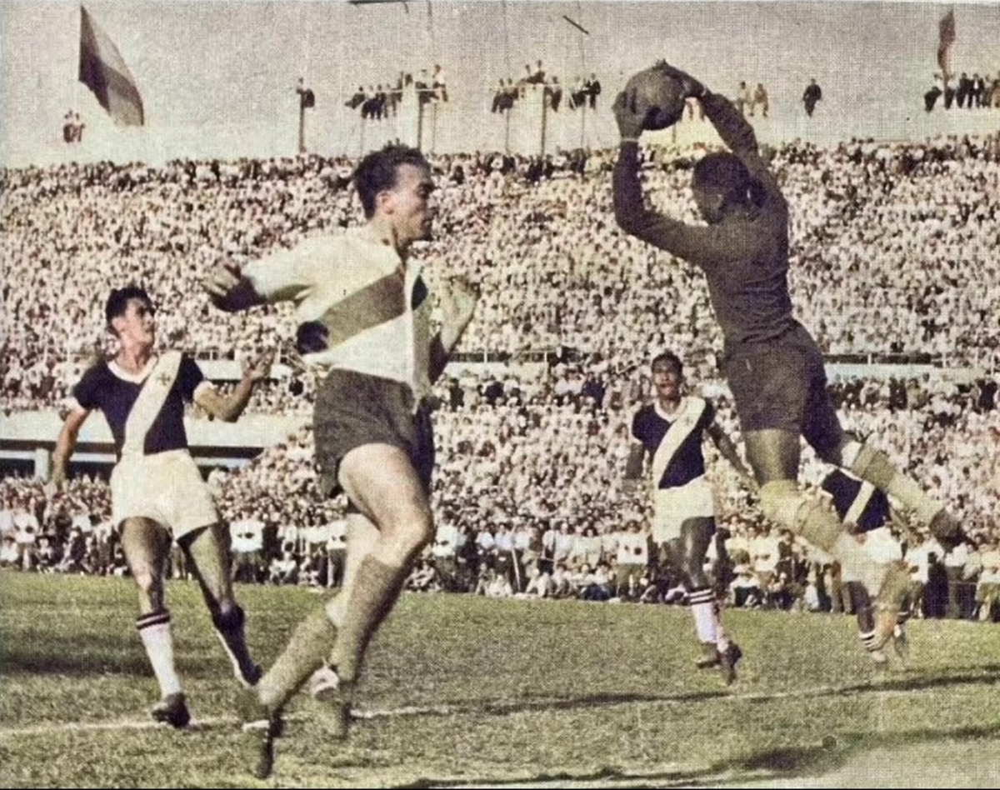

14 de março de 1948
Primeiro time brasileiro a ganhar um Titulo Internacional

Em 14 de março de 1948, o Gigante da Colina empatou por 1 a 1 com o
poderoso River Plate (ARG), recheado de craques, sagrando-se campeão,
de forma invicta, do Campeonato Sul-Americano de Clubes Campeões de
1948, “embrião” da Copa Libertadores e da Liga dos Campeões da Europa.
Foi o primeiro título internacional do futebol brasileiro fora do
país.
16 de junho de 1957
Conquista do Troféu Teresa Herrera
No ano de 1957, o Vasco da Gama foi praticamente “Campeão Espanhol”,
pois venceu os principais times da Espanha na época, Real Madrid,
Barcelona, Atlético de Bilbao, Valência e Espanyol, tendo conquistado
6 vitórias em 6 jogos disputados, 100% de aproveitamento, tendo sido
todos os jogos realizados em terras espanholas, exceto a vitória por 4
a 3 sobre o Real Madrid, com partida disputada em Paris, pelo Torneio
Internacional de Paris (edição com status de Mundial de Clubes à
época):
14 de junho de 1957
Campeão do Torneio Internacional de Paris (Edição com status de
Mundial de Clubes à época)
O cenário, o Estádio Parque dos Príncipes, na capital francesa. O
adversário, o Real Madrid, então bicampeão europeu 1955/1956 e
1956/1957, e já naquele tempo dono de um elenco milionário, com
Puskas, Di Stéfano, Kopa, Gento e outros. Mas nada disso intimidou o
Vasco que, em plena Cidade Luz, ofuscou as estrelas do adversário e
fez brilhar o futebol brasileiro, antes mesmo da conquista da primeira
Copa do Mundo, a de 1958, na Suécia. Ao fim do duelo, os vascaínos
superaram o time merengue por 4 a 3 e ergueram o primeiro Troféu de
Paris, a 14 de junho de 1957. Como ainda não havia Campeonato
Brasileiro nem Libertadores da América, o Vasco foi convidado porque
havia sido o campeão do primeiro e único (até então) Sul-Americano de
clubes, em 1948, no Chile, e como campeão carioca de 1956
6 de setembro - 16 de dezembro de 1989
Segundo título do Campeonato Brasileiro

A segunda conquista nacional do Vasco da Gama completa 30 anos nesta
segunda-feira (16/12). Ela foi obtida em 1989 por uma geração que
ficará para sempre marcada na memória dos torcedores pelo bom futebol
e pela forte identificação com as cores do clube. A grande maioria do
elenco campeão foi formado em São Januário e muitos desses jogadores
chegaram a vestir a camisa amarelinha. Até mesmo por isso, em diversos
momentos daquele ano, o Gigante da Colina viu sua equipe, dirigida na
oportunidade por Nelsinho Rosa, ser chamada de “SeleVasco”. Apesar
disso, o Almirante iniciou a temporada enfraquecido pelas saídas de
Roberto Dinamite e Romário e não conseguiu o tão desejado
Tricampeonato Carioca no primeiro semestre. No Brasileiro, porém, a
história foi outra. O Vasco da Gama acertou a contratação de Bebeto
junto ao Flamengo, reencontrou o bom futebol e voltou a ser um
tormento para os adversários dentro das quatro linhas. A maior prova
disso foi o retrospecto na primeira fase: cinco vitórias, quatro
empates e apenas uma derrota.
5 de julho – 21 de dezembro de 1997
Terceiro título do Campeonato Brasileiro
o Gigante da Colina conquistou o tricampeonato Brasileiro no Maracanã.
O Vasco terminou a primeira fase da competição na liderança, com 54
pontos, após enfrentar os 26 times que participavam do campeonato. Com
um ataque avassalador, o Cruzmaltino se classificou para disputa
mata-mata. Na etapa seguinte, o Vasco atropelou o Flamengo por 4 a 1 e
garantiu sua vaga na final para enfrentar o Palmeiras. O time carioca
e o time paulista, como o melhor do grupo A e do grupo B, duelaram
para saber quem levantaria a taça de 1997. A disputa foi divida em
dois jogos bem competitivos e ambas partidas terminaram empatadas, mas
o Cruzmaltino levou a melhor pela vantagem que tinha do empate e se
consagrou tricampeão do Brasileirão naquele ano.
15 de janeiro – 26 de agosto de 1998
Primeiro e único título da Copa Libertadores
O dia 26 de agosto é especial para todos torcedor vascaíno. O Vasco
erguia o troféu a Copa Libertadores, que coroou uma geração
inesquecível diante do Barcelona, de Guayaquil. Uma vitória por 2 a 1,
no Equador, que confirmava os título mais importante da história do
Cruz-Maltino, no ano de seu centenário. Na época, o Cruz-Maltino
chegava à Libertadores como atual campeão brasileiro, mas tinha
perdido duas estrelas de sua constelação: Edmundo e Evair. Porém, uma
dupla entrou para história do clube e marcou boa parte dos gols da
caminhada vitoriosa: Donizete e Luizão. Na campanha, o time eliminou
os três últimos vencedores da competição: Grêmio, River Plate e
Cruzeiro.
29 de julho de 2000 – 18 de janeiro de 2001
Quarto título do Campeonato Brasileiro

Copa João Havelange foi a denominação dada pelo Clube dos 13 ao
Campeonato Brasileiro de Futebol de 2000, em homenagem ao
ex-presidente da CBF e da FIFA João Havelange. Impossibilitada pela
Justiça de organizar o campeonato, a CBF passou a responsabilidade ao
Clube dos 13, mas como este não pôde aplicar os critérios de acesso e
descenso do ano anterior, acabou gerando o maior Campeonato Brasileiro
de todos os tempos, reunindo 116 clubes de três divisões em um único
torneio, dividido em quatro módulos na sua primeira fase. Antes do
início, o Clube dos 13 afirmou que não pretendia realizar uma segunda
edição no ano seguinte, retomando à CBF o direito de
organização.[1][2] O campeão foi o Vasco da Gama, que conseguiu o seu
quarto título nacional, repetindo os feitos de 1974, 1989 e 1997. O
vice-campeão foi o São Caetano, que havia sido fundado há pouco mais
de 10 anos e que começou a disputa no Módulo Amarelo, mas que chegou à
final eliminando clubes tradicionais como Fluminense, Palmeiras e
Grêmio. Em sua quadragésima quarta, e última edição do século XX, o
Campeonato Brasileiro confirmou seu histórico de desorganização
institucional, mas também se consolidou como o campeonato de futebol
mais disputado do mundo: 16 clubes diferentes conseguiram o título de
campeão brasileiro em apenas 42 anos.
1º de agosto – 20 de dezembro de 2000
Campeão da Copa Mercosul
Nunca um apelido fez tanto sentido no futebol quanto no dia 20 de
dezembro de 2000. Há exatos 15 anos, o Club de Regatas Vasco da Gama,
também conhecido por sua apaixonada torcida como o “time da virada”,
fazia o impossível em São Paulo e honrava o grito das arquibancadas.
Comandado pelo ídolo Romário, o Cruzmaltino disputou a final da Copa
Mercosul daquele ano contra o Palmeiras, no Estádio Palestra Itália, e
conquistou o título com uma vitória por 4 a 3, após terminar o
primeiro tempo perdendo por 3 a 0. A partida ficou conhecida como “a
virada do século”. A competição sul-americana tinha uma fórmula de
disputa diferente dos torneios atuais. Na decisão, dois jogos eram
realizados para definir o vencedor. Em caso de resultado positivo de
um dos times nos dois confrontos, ele se tornava campeão, porém, se
houvesse vitória de cada equipe em cada jogo, um terceiro duelo era
realizado para definir quem levantaria o troféu.
16 de fevereiro – 8 de junho de 2011
Primeiro título da Copa do Brasil
O dia oito de junho de 2011 é inesquecível para os cruzmaltinos. O
Club de Regatas Vasco da Gama não conquistava um título em competições
nacionais há 11 anos. O grito entalado na garganta do torcedor foi
solto após um jogo memorável diante do Coritiba, em pleno Couto
Pereira, que terminou com derrota por 3 a 2. O gol salvador de Eder
Luis, com chute forte do meio da rua, garantiu o troféu por conta da
vitória por 1 a 0 na ida, em São Januário. Foi uma campanha com cinco
vitórias, cinco empates e apenas uma derrota.